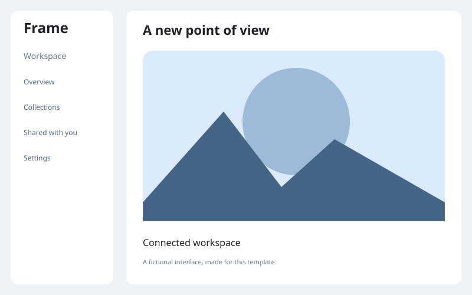
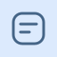
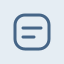
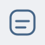
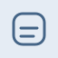
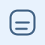
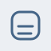
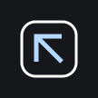

Alex Morgan
Developer & independent maker
Hi, I’m Alex Morgan.
I design and build thoughtful digital products. From a first sketch to the small details, I help useful ideas find their way into the world.
Development Design Prototyping Creative tools
7 Sample projectsA starting point for your work
⌘ Mobile to desktopAndroid · iOS · macOS
↗ Built for real lifeLocal tools · Connected devices
Selected work
Selected products.Built with purpose. Fictional example projects to help you showcase your own work, process, and ideas.
Make room for your next idea. Frame Desktop


Camera & video · iPhone + Mac
Frame Details ↗ A sample camera product connecting a phone and a desktop. Use this featured card to tell the story of your flagship project.
POCKET Keep it
A thoughtful product. 
Personal tools · iPhone + Mac
Pocket Details ↗ A sample personal organizer with a calm, focused interface. Replace this description with the decisions behind your own product.
BRIDGE Less friction.
A thoughtful product. File transfer · Android + iPhone
Bridge Details ↗ A sample file-sharing experience for nearby devices. Show how your work makes a complicated task feel straightforward.
MIRROR One idea.
A thoughtful product. 
Connected devices · Android + iOS
Mirror Details ↗ A sample connected-device project. This card is a place for an idea that helps people work together across screens.
TEMPO Find your
A thoughtful product. 
Music & community · Android + iOS
Tempo Details ↗ A sample listening experience with a considered library and a simple player. Share a product that brings people a little closer.
CIRCUIT From idea.
A thoughtful product. 
Creative tools · Android
Circuit Details ↗ A sample workspace for hands-on projects. Use the detail view to explain a workflow, a technical challenge, or something you learned.
QUICKSCAN Less effort.
A thoughtful product. 
Everyday utilities · Android
Quickscan Details ↗ A sample utility that removes an everyday frustration. Highlight a small product whose value comes from doing one thing well.
Demo names and interfaces are examples. Make this space your own.
A little about me
An engineer’s mind.A maker’s instinct. I work where thoughtful design meets practical software.
This is your space to introduce yourself: what you care about, what you build, and how you approach a new challenge. Keep it personal, clear, and grounded in the work.
More about my background ↗ 01 Product engineering Useful software, clear architecture, and details that feel right.
02 Independent development Taking an idea from a first sketch to something people can use.
03 Connected experiences Helping people and their devices work a little better together.
Personal project / Currently exploring
Work in progress 
Studio Notes LAB Ideas · Experiments · Small discoveries
A place for the work between the finished projects. Share an experiment, a learning journal, or something you’re still figuring out.
Small experiments Learning in public New ideas
A little more about this project
Explore Start with a question and try something new.
Build Make a small prototype to learn from.
Share Write down what worked and what comes next.